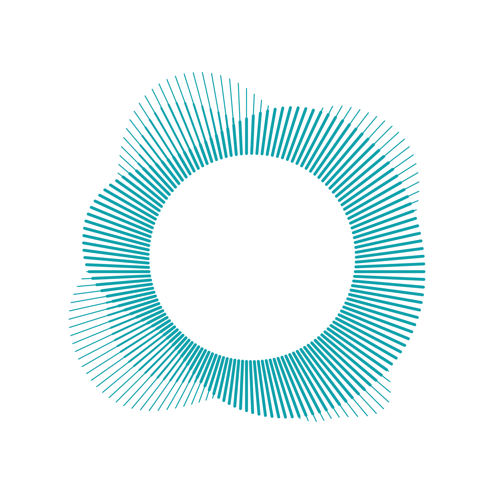
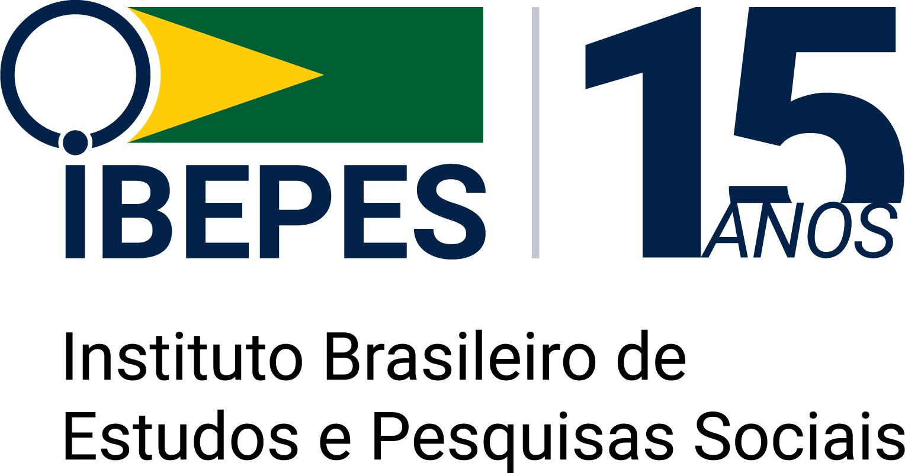

Jady Pamella
AI and Technology Leader
I lead high-performance engineering teams, design AI-powered platforms, and build technologies that create measurable impact in climate tech, finance, and the public sector.
Let's Build Something Meaningful Together!About Me
A technology leader connecting strategy, innovation, and execution. I specialize in transforming complex environments into scalable, high-impact solutions that drive business value and global sustainability.
Currently based in Stockholm, Sweden. With 12 years of experience across finance, government, and climate tech, I’ve built my career from software development to engineering leadership, shipping AI systems at scale and managing teams and budgets in complex environments.
I believe in technology as a force for meaningful change, whether modernizing critical infrastructure, advancing cybersecurity in the public sector, or building climate-tech solutions that support a more resilient future.
Career Highlights
Co-founder, Tree++
Climate-tech platform with 1,000+ trees planted across 10 countries, connecting volunteers and landowners via AI-powered carbon footprint tracking.
IT Manager, Bank of Brasília
Managed USD 1M+ budgets and led AI, automation, and governance initiatives.
Dual Master's Degrees
Computer Science (Stockholm) & Cybersecurity (Brasília).
Swedish Institute Scholar
Awarded for outstanding global professional impact.
Core Expertise
Featured Projects
SoiQet
LLM-Powered Social Media Platform
RAG-based AI platform integrating 6 social networks for content managers at small businesses and influencers. Prototyped on Lovable, migrated to production on GCP with prompt engineering to optimize LLM outputs across all networks.
Tree++
Climate Tech Carbon Credit Platform
Platform with 1,000+ trees planted across 10 countries (2026), connecting volunteers and landowners for tree planting via an AI-powered carbon footprint calculator, QR-based carbon credit tracking, and an ML matchmaking system.
Deep Forestry
AI Research MSc Thesis
MSc thesis: hybrid geometric-neural pipeline for real-time autonomous landing zone detection in below-canopy forests using LiDAR point clouds (RANSAC, PointNet, PointNet++, DGCNN). Achieved 29x latency reduction from 5.8s to 200ms through KD-Tree and voxel-downsampling optimizations.
D2B - Dream to Business
Idea Validation Platform
Platform that helps founders validate business ideas through short video pitches, structured feedback, and gamified evaluation, using AI to cluster feedback and highlight next actions.
FactOrFakeAI
AI Literacy and Content Authenticity
Educational project that compares real content and AI generated content to discuss detection, bias, and responsible AI, helping non technical audiences understand how modern AI works.
AI Audit and Security Advisory
Independent Consulting Engagement (AI-powered consumer product, anonymised by NDA)
Delivered a 60-page technical audit (Decision Summary + Executive Report + Technical Report) of an AI-powered consumer product MVP. Identified critical data exposure (20 of 21 Supabase tables without Row Level Security, verified with a real exploit using only the public API key), 29 missing AI and security guardrails, and AI cost runaway risk in unbounded chat history. Delivered product strategy reframe and 8-week prioritised roadmap.
LabRisk
Cybersecurity and Risk Lab
Research lab focused on cybersecurity management, risk, and privacy in the public sector, including work on CIS controls, GDPR-aligned frameworks, and judiciary cybersecurity in Brazil.

Prêmio Infosfera
Freelance Web Development for Public-Sector Information Award (LabRisk/UnB + Infojus/UFPR)
Built and delivered the official website for the Prêmio Infosfera de Boas Práticas em Gestão da Informação na Esfera Pública, a Brazilian award partnership between LabRisk (UnB) and Infojus (UFPR). Full site delivery: hero, award rules, evaluation criteria, application flow, publication calendar, and timeline pages. Closed engagement, delivered March 2026.

IBEPES
Freelance — Custom WordPress Theme for Brazilian Social Research Institute
Designed and shipped a custom WordPress theme for the Instituto Brasileiro de Estudos e Pesquisas Sociais (IBEPES). Full custom theme architecture, content modelling, and deployment. Closed freelance engagement.
Ge Effektivt
Open Source Contributor Effective Giving Platform (Stiftelsen Effekt)
Open-source contributor to the Stiftelsen Effekt main-site (Next.js + Sanity CMS, shared across the
Norwegian, Swedish, and Danish effective-giving sites). Shipped mobile layout fixes including a
dynamic CSS variable (--cookie-banner-height) driven by a ResizeObserver to align the
navbar, the floating Give button, and the cookie banner across breakpoints. PR #1100.
Alla Ska Få Mat
Social Impact Initiative
Community project in Sweden that organizes donations, volunteers, and communication to support families facing food insecurity, using digital tools for coordination and outreach.
Insphas
Digital Transformation for Mental Health Institute
Volunteer IT leadership for Insphas Institute of Psychology, modernizing digital presence and infrastructure, including websites, content, and communication flows for mental health services.
Hackathons & Innovation Events
Hands-on experience across the full event lifecycle: shipping under time pressure as a competitor, building the operational backbone as an organizer, evaluating projects as a judge, and supporting teams as a mentor.
Won Competitor
EpiMinds Google AI Hackathon
20261st place. SU Heroes team leader. Built a multi-agent crisis-response system in under 24 hours.
Kong AI-Assisted Coding Hackathon
20251st place. Agentic-coding track.
Kolomolo AI-Assisted Coding Hackathon
20251st place. AI-coding pairing track.
Drivhuset Impact Cup
2025Tree++ entry. Pitched the climate-tech computer-vision and ML matchmaking pipeline to founders, mentors, and impact-investor judges.
Organized Co-organizer
DevOpsDays Brasília
3 editionsCo-organizer across three editions. ~250 participants per edition, 30+ speakers per edition, ~750 total attendees. Owned speaker coordination, schedule, A/V logistics, online streaming setup, and sponsor coordination.
Drivhuset Ideathon
2025Co-organizer in partnership with the Drivhuset incubator network in Stockholm. Owned format design, applicant selection, mentor pairing, and judge coordination. The event surfaced new climate-tech and AI ventures inside the Stockholm student-founder community.
Judged Panel reviewer
Apart Research Global South AI Safety Hackathon
2026Judge on the Global Track. Primary track: Technical AI Safety. Secondary: AI Governance and AI Security. Reviewed projects spanning Latin America, Africa, and Asia hubs against the official Apart Sprint rubric (Impact, Execution, Presentation, 1-5 scale).
Mentor Team support
Hack for the Futures
2026Mentor supporting student and early-career teams on AI and tech-for-good projects. Guidance on technical scoping, prototyping under time pressure, and pitching to judges.
Testimonials
"[Quote pending. Add a 2 to 3 sentence endorsement from this person about working with Jady.]"

"[Quote pending. Add a 2 to 3 sentence endorsement from this person about working with Jady.]"

"[Quote pending. Add a 2 to 3 sentence endorsement from this person about working with Jady.]"

Publications
Enhancing Cybersecurity in the Judiciary: Integrating Additional Controls into the CIS Framework
Co-authored peer-reviewed study proposing an expanded CIS cybersecurity model for digital protection across the Brazilian judiciary. Published in one of the world’s leading cybersecurity journals.
Cybersecurity Protection in the Brazilian Judiciary: A Comparative Analysis of State Court Security Structures
Research analyzing cybersecurity maturity and structural gaps in state courts across Brazil. Provides recommendations on governance, risk, and compliance to strengthen digital resilience.
Critical Infrastructure Under Threat: Business Risks for Cybersecurity in Metropolitan Transport Systems
Peer-reviewed conference paper on cybersecurity business risk in metropolitan transport systems. Examines operational and governance exposures in critical-infrastructure environments and the controls needed to mitigate them.
Experience
SoiQet Social IQ Set
Founder and CEO
- Founded SoiQet, an LLM-powered platform integrating 6 social networks for content managers at small businesses and influencers: RAG-based AI content generation, scheduling, and analytics on GCP.
- Prototyped full product on Lovable, then migrated to production on GCP (Python, Node.js, Supabase, React), applying prompt engineering to optimize LLM outputs for content quality across all integrated networks.
- Own product vision, engineering, and go-to-market as Head of Engineering and CEO, from early validation through platform growth.
Tree++ (Climate Tech Startup)
Co-founder and Chief Innovation Officer
- Lead technical strategy and fundraising for a climate-tech platform with 1,000+ trees planted across 10 countries (2026), connecting volunteers and landowners via an AI-powered carbon footprint calculator and QR-based carbon credit tracking.
- Built computer vision pipeline to analyze imagery for carbon credit consumption monitoring, and an ML matchmaking system connecting offsetting requests to volunteers and landowners.
- Hired and lead the engineering team, handling performance management, delivery standards, and budget planning.
Bank of Brasília BRB
IT Analyst and DevOps Engineer
- Built a production AI chatbot (Python, TensorFlow, NLP) during a Silicon Valley engagement that cut customer response time by 40% for 100K+ users.
- Led system design and implementation of DevSecOps CI/CD pipelines across Jenkins, GitLab, Docker, OpenShift, and Kubernetes, reducing deployment time by 60%.
- Built Power BI dashboards for the C-suite and maintained compliance with BACEN and GDPR-equivalent data protection standards.
- Partnered directly with the CIO, CFO, and COO to align IT delivery, compliance, and investment priorities with business goals.
Bank of Brasília BRB
IT Manager
- Managed a $1M+ IT budget with full P&L accountability, reducing operating costs by 15% and generating $150K+ in savings through vendor renegotiation and contract restructuring.
- Led a team of 10+ IT professionals across hiring, performance reviews, OKR planning, career development, and adoption of COBIT, ITIL, Agile, and Lean IT practices.
- Redesigned Change and Configuration Management processes, improving compliance and audit accuracy by 40% and lowering regulatory exposure.
- Led Lean IT and DevSecOps transformation efforts that reduced operational waste by 20% and improved execution standards across the department.
Brazilian Institute of Information in Science and Technology - IBICT
Research Engineer
- Customized Archivematica for Kubernetes and OpenShift deployment, enabling scalable digital preservation infrastructure for government agencies managing millions of digital assets.
- Supported national initiatives in knowledge management, data governance, and digital transformation for public sector with improved automation workflows.
Ministry of Integration and Regional Development MCID
Software Engineer
- Modernized legacy PHP and MySQL systems improving scalability, maintainability, and performance for national integration services.
- Developed responsive web and mobile applications increasing citizen access to government digital services and platforms.
SENAI National Industrial Training Service
Web Developer and Designer
- Developed e-learning platforms supporting 2,000+ students with interactive learning modules, progress tracking, and assessment tools.
- Built PHP and MySQL systems for statewide education programs, optimized UX for digital curriculum delivery and multi-device access.
Deep Forestry
AI Research Engineer (MSc Thesis)
- MSc thesis: designed and evaluated a hybrid geometric-neural pipeline for real-time autonomous landing zone detection in below-canopy forests using LiDAR point clouds (RANSAC, PointNet, PointNet++, DGCNN).
- Achieved 29x latency reduction (5.8s to 200ms) through KD-Tree and voxel-downsampling optimizations on real forest flight data collected with Deep Forestry's autonomous drone platform.
SU Heroes - Hackathon Team
Team Leader
- Lead multidisciplinary teams building applied AI automation and agentic AI systems, mentor students and engineers in AI/ML, cloud architecture, and rapid prototyping.
1st Place Kong AI Assisted-Coding Hackathon (2025)
1st Place Kolomolo AI-Assisted Coding Hackathon (2025)
Stockholm University SU
Teaching Assistant - Internet of Things
- Support 200+ students in IoT coursework: Python programming, sensor integration (MQTT), edge computing, and data processing pipelines.
Drivhuset Stockholm SU
Student Ambassador
- Support founders and students in entrepreneurship programs, mentor on technology strategy and product development, promote innovation activities across Stockholm University.
DevOpsDays Brasília
Volunteer Organizer
- Coordinate technical conferences with 250+ participants, develop partnerships with industry and academia, curate DevSecOps and AI/ML content.
Alla Ska Få Mat
Volunteer and Web Developer
- Built and maintain the website for a nonprofit that distributes weekly meals to vulnerable families and homeless individuals in Stockholm. Also support volunteer operations on the ground.
Ge Effektivt Stiftelsen Effekt
Volunteer Frontend Developer
- Contributed mobile layout fixes to geeffektivt.se (Next.js + Sanity CMS, multi-country effective-altruism donation platform): replaced overflow:scroll with overflow-x:hidden on the mobile navbar, published a
--cookie-banner-heightCSS custom property via ResizeObserver to dynamically reposition the floating Give button above the cookie banner, restored fixed-bottom mobile button group with 2rem footer margin. Reviewed and approved by the in-house designer.
Education
Stockholm University SU
Master of Science in Computer and Systems Sciences (AI and IoT)
- Specialization: Machine Learning, Deep Learning, Computer Vision, Natural Language Processing, IoT Systems, Autonomous Systems.
- MSc thesis in collaboration with Deep Forestry: hybrid geometric-neural pipeline for real-time autonomous landing zone detection in below-canopy forests using LiDAR point clouds.
- Student Ambassador at Drivhuset Stockholm, Teaching Assistant in Internet of Things (IoT).
- Member of the Network for Global Professionals (NFGP) by the Swedish Institute.
University of Brasília UnB
Master of Engineering in Cybersecurity
- Specialization: Risk management, AI for cybersecurity, critical infrastructure protection, and security governance frameworks.
- Published research in top-tier journal (Impact Factor: 5.6) on cybersecurity frameworks for judicial systems.
Massachusetts Institute of Technology MIT
Designing and Building AI Products
- Specialization: 40-hour executive program on AI product development, deployment strategies, and scaling ML systems in production environments.
Descomplica
MBA in Innovation, Technology & Entrepreneurship
- Focus: Business model innovation, technology strategy, startup development, and lean startup methodology.
Descomplica
Postgraduate in Data Analysis
- Focus: Statistical modeling, machine learning algorithms, predictive analytics, data visualization, and business intelligence.
Fundação Getulio Vargas FGV
MBA in Project Management
- Specialization: Agile methodologies, Scrum, PMBOK, risk management, stakeholder management, and change management for IT project delivery.
Faculdades Integradas UPIS
BSc in Information Systems
- Focus: Algorithms, data structures, software engineering, database systems, and technology entrepreneurship fundamentals.
Certifications
Leadership
- EA Sweden Fellowship, Effective Altruism (2026)
- Women's Leadership Program (SOUL, 2024)
- Self-Leadership Program (Hyper Island and Swedish Institute, 2024)
- Collaborative Approaches to Societal Issues (Stockholm School of Entrepreneurship, 2024)
AI & Data
- BlueDot Impact AI Safety Fellowship, AGI Strategy (2026)
- BlueDot Impact AI Safety Fellowship, Technical AI Safety (2026)
- Business Intelligence Foundation (Certiprof, 2024)
- Data Analysis (ENAP, 2023)
- Designing and Building AI Products (MIT, 2022)
IT Governance
- DevOps Master (EXIN, 2020)
- Lean IT Foundation (EXIN, 2019)
- COBIT 5 Foundation (ISACA, 2015)
- ITIL V3 Foundation (EXIN, 2015)
Agile & Process
- Lean Six Sigma White Belt (Certiprof, 2024)
- Scrum Foundation (Certiprof, 2019)
Language
- TOEFL iBT (ETS, 2024)